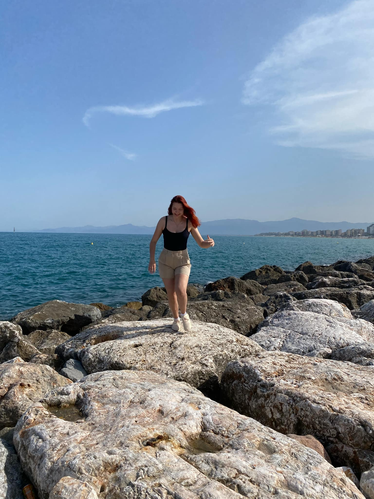
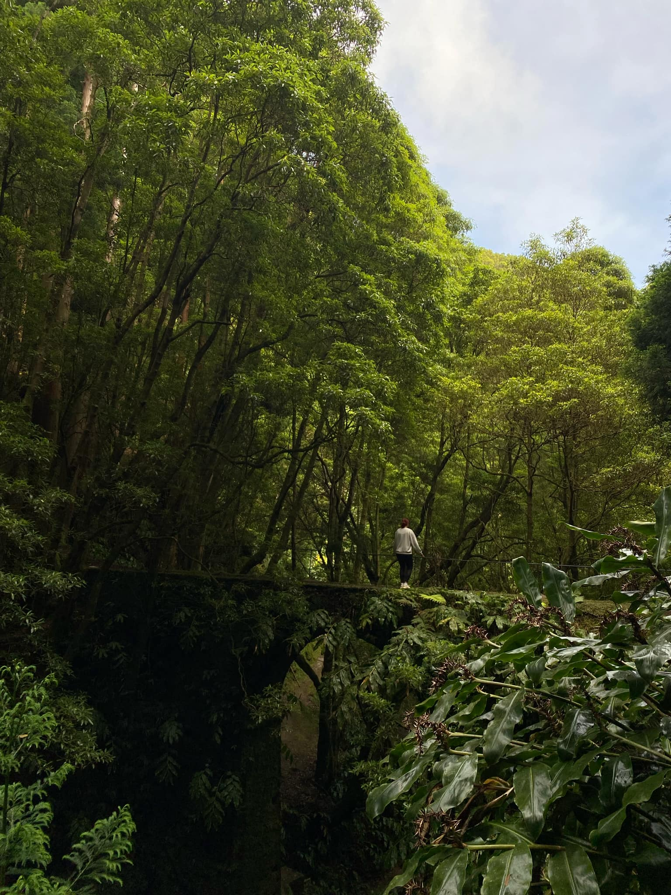
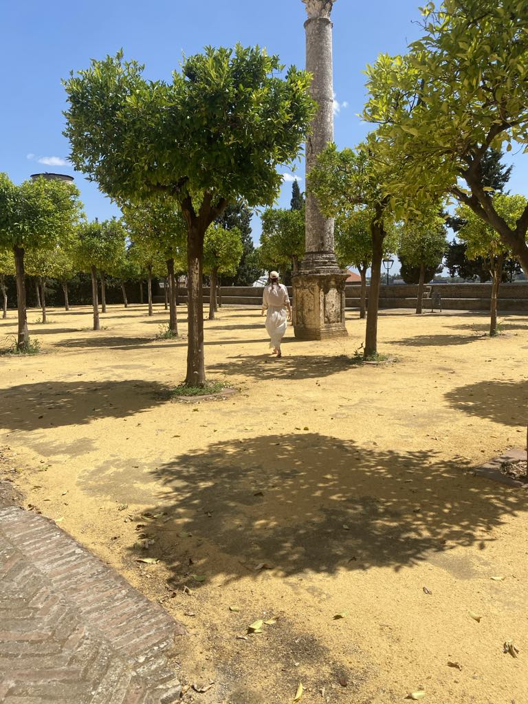
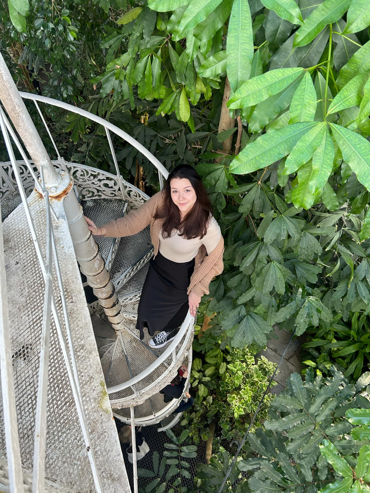
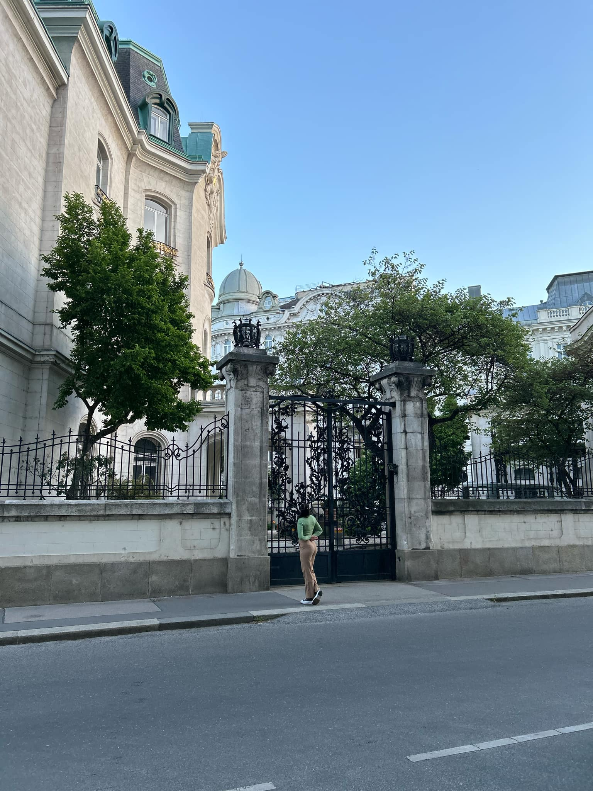
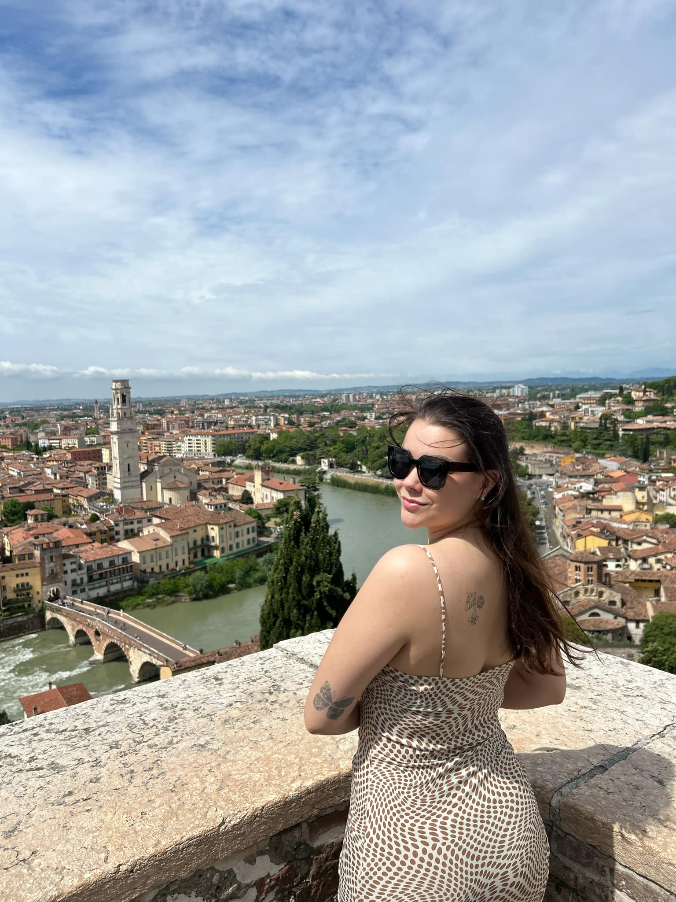
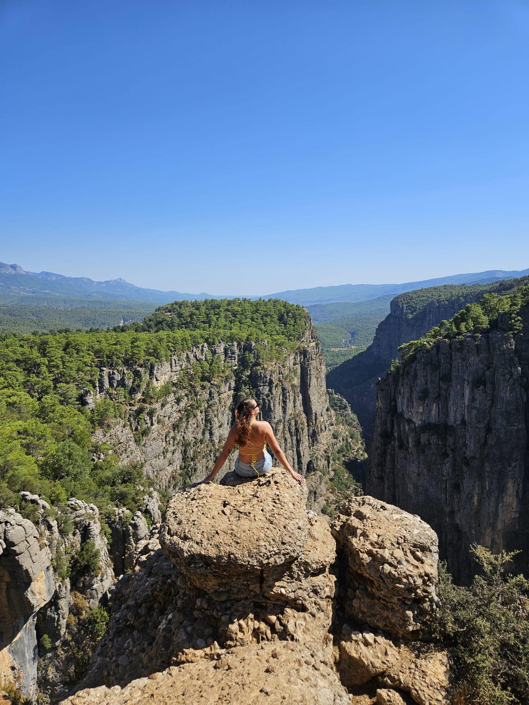
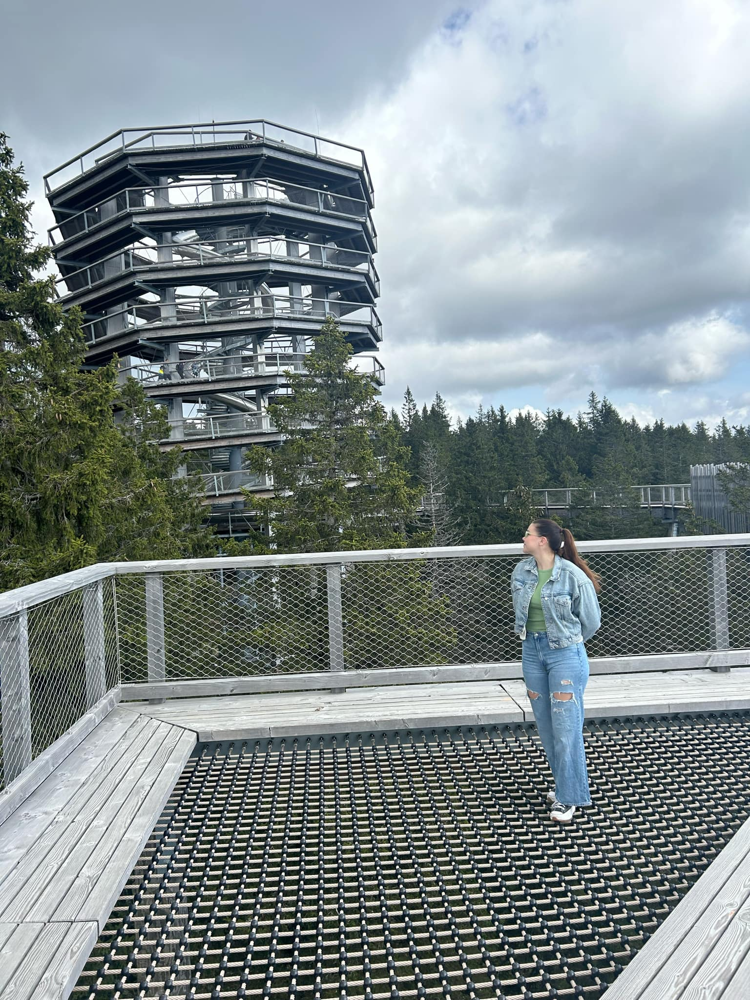

1. Perpignan było cudownym małym miasteczkiem na zachodzie Francji. Oprócz oceanarium nie było tam zbyt dużo do zwiedzania, natomiast nie przeszkadzało to w niczym. Miejscowość sama w sobie była bardzo urokliwa, było dużo miejsc do spacerowania i kilka dobrych restauracji. Panujący spokój i cisza pozwalały na głęboki odpoczynek.
2. Do wodospadu Janela do Inferno prowadziła średniozaawansowaną drogą z cudownymi widokami. Samo miejsce znajdowało się w środku lasu i wyglądało zjawiskowo. Natomiast najbardziej zapierający dech w piersiach punkt znajdował się w drodze powrotnej. Wysokie na kilkanaście metrów przejście porośnięte zielenią z każdej możliwej strony wyglądało naprawdę zjawiskowo.
>W ramach instytutu powstał Rządowy Instytut Weterynarii, całość w 1840 przekształcono w Instytut Gospodarstwa Wiejskiego i Leśnictwa. Próby rusyfikacji polskich szkół doprowadziły ówczesny instytut na skraj likwidacji, szkoła została przeniesiona najpierw do Puław, a potem do Rosji. Do stolicy Polski wróciła w 1918 roku wraz z odzyskaniem niepodległości, uczelnia została w 1919 roku upaństwowiona i przemianowana na Szkołę Główną Gospodarstwa Wiejskiego. Pierwszymi jej wydziałami były rolniczy i leśny, od 1921 także ogrodniczy. Ok. 1925 wzniesiono budynki uczelni przy ul. Rakowieckiej 26/30 według projektu Tadeusza Zielińskiego[5]. W Rogowie i w Skierniewicach powstały zakłady doświadczalne.
W okresie II wojny światowej, w czasie okupacji niemieckiej, uczelnia prowadziła tajne nauczanie, jak również zajęcia w Miejskiej Szkole Ogrodniczo-Rolniczej i Prywatnej Szkoły Rybackiej[8]. Jej budynki nie zostały zniszczone[9], w okresie okupacji mieściły się w nich koszary dla żołnierzy niemieckich obsługujących artylerię przeciwlotniczą na Polu Mokotowskim[10]. Biblioteka SGGW utraciła jedynie 7% swoich zbiorów (3325 z 44 035 jednostek)[11].
Wkrótce nastąpił dalszy rozwój uczelni. Już w 1951 istniały wydziały: Melioracji Rolnych, Technologii Drewna, Zootechniki, później powstała sekcja kształtowania terenów zielonych, obecnie Wydział Architektury Krajobrazu. Do szkoły przyłączono w 1952 wyłączony z Uniwersytetu Warszawskiego Wydział Weterynaryjny.
W 1956 roku decyzją Rady Ministrów SGGW otrzymała tereny na Ursynowie oraz sąsiadujące gospodarstwa Wolica, Natolin i Wilanów, tam właśnie postępował rozwój uczelni – powstały wydziały Techniki Rolniczej oraz Żywienia Człowieka (1973). Zagospodarowanie terenu kampusu jest dziełem dr. inż. Przemysława Wolskiego[12]. Ostatecznie na całkowite przeniesienia kampusu na Ursynów zdecydowano się w 2001 roku.
W maju 1991 r. zmieniono nazwę uczelni ze Szkoły Głównej Gospodarstwa Wiejskiego − Akademii Rolniczej w Warszawie na Szkołę Główną Gospodarstwa Wiejskiego w Warszawie[2]. Rektorat uczelni mieści się w zabytkowym pałacu należącym do Juliana Ursyna Niemcewicza, który ze względu na swą funkcję nazywany jest „pałacykiem Rektorskim”.
Od 1 października 2019 roku głównymi jednostkami organizacyjnymi uczelni są instytuty oraz wydziały[14]. Wydziały są odpowiedzialne za kształcenie na kierunkach studiów. Instytuty organizują działalność naukową i badawczą w ramach dyscyplin naukowych. Badania naukowe prowadzone są w następujących instytutach:

Moja dziewczyna na plaży w Perpignan, Francja

Moja dziewczyna w drodze powrotnej z Janela do Inferno, San Miguel, Portugalia

Moja dziewczyna w Italice, Sewilla, Hiszpania

Moja dziewczyna w ogrodzie botanicznym w Kopenhadze, Dania

Moja dziewczyna na ulicach Wiednia, Austria

Moja dziewczyna na zamku św. Piotra w Weronie, Włochy

Moja dziewczyna na szczycie Zielonego kanionu, Manavgat, Turcja

Moja dziewczyna na wieży widokowej w Rogli, Słowenia